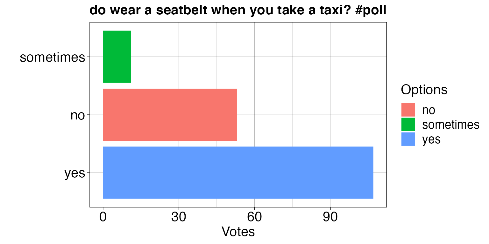

Introduction to tweetRpoll
tweetRpoll-vignette.RmdOverview
tweetRpoll is a R package that allows users to extract and visualize poll data from Twitter. Our goal is to make tweetRpoll helpful and user-friendly; any R beginner can effectively gain access to the data and make their own data-driven decisions.
To use this package, follow the installation guide on README and install this package. Then, import the package.
library(tweetRpoll)Functions
Extract tweet IDs with get_polls_from_user:
get_polls_from_user extracts tweet IDs of tweets that contain polls for a Twitter user given their handle (i.e. PollzOnTwitta). This function requires Twitter API credentials. Users need to store their credentials in a .Renviron file in the root directory.
get_polls_from_user('PollzOnTwitta')
#> id
#> 1 1239677495487737856
#> 2 1239677278193438722
#> 3 1239676949238292488
#> 4 1233970022109892608
#> 6 1228442768902688769
#> 8 1224556305714683910
#> 9 1224553979633455106
#> 10 1224543671665733634Extract poll data with get_poll_by_id:
get_poll_by_id extracts poll information such as poll questions, poll options, and poll responses, from Twitter given the tweet ID returned from the get_polls_from_user function.
get_poll_by_id(1239677495487737856)
#> $text
#> [1] "do wear a seatbelt when you take a taxi? #poll"
#>
#> $duration
#> [1] 10080
#>
#> $date
#> [1] "2020-03-23T22:18:41.000Z"
#>
#> $`poll options`
#> position label votes
#> 1 1 yes 107
#> 2 2 no 53
#> 3 3 sometimes 11
#>
#> $user
#> [1] "PollzOnTwitta"
#>
#> $total
#> [1] 171Visualize poll data with visualize_poll:
visualize_poll takes in the output of the get_poll_by_id function and visualizes the poll information. The function provides option to include additional information in the text box if at least one of the arguments (1) show_user, (2) show_duration, and (3) show_date is set to True.
poll_info <- get_poll_by_id(1239677495487737856)
visualize_poll(poll_info)